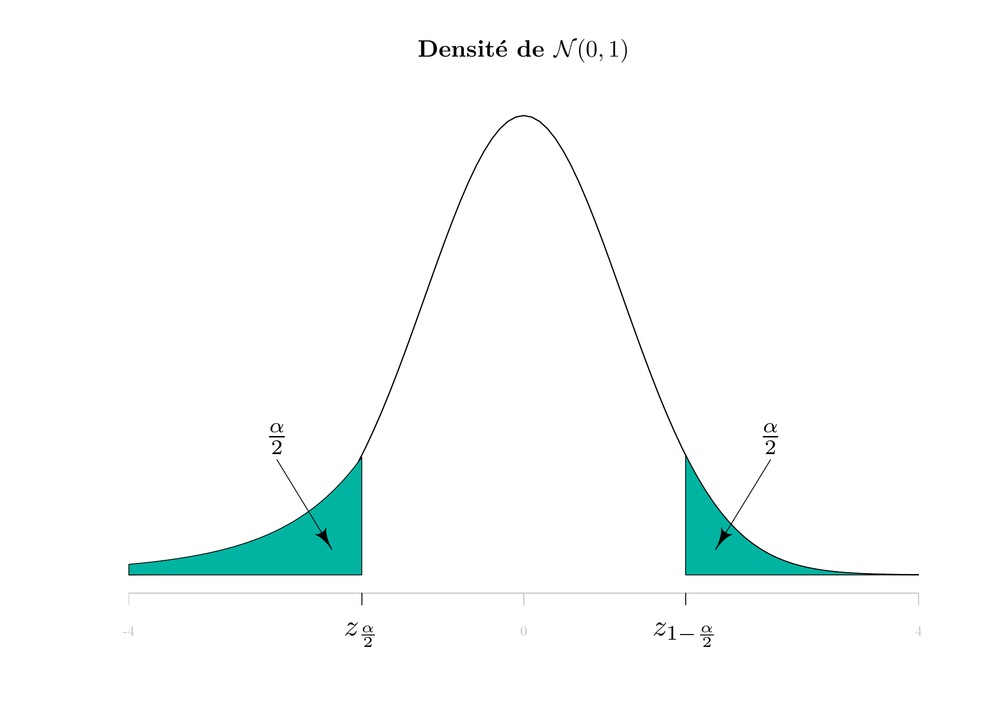

Appendix B — Standard Normal Distribution Table 2
\(X\) étant une variable aléatoire de loi \(\mathcal{N}(0,1)\) et \(\alpha\) un réel de \([0,1]\), la table donne la valeur de \(z_{1-\frac{\alpha}{2}}=\Phi^{-1}(1-\frac{\alpha}{2})\) telle que \(P(|X| > z_{1-\frac{\alpha}{2}})=\alpha\). En , la commande correspondante est qnorm(1-alpha/2).

| \(\alpha\) | 0 | 0.01 | 0.02 | 0.03 | 0.04 | 0.05 | 0.06 | 0.07 | 0.08 | 0.09 |
|---|---|---|---|---|---|---|---|---|---|---|
| 0 | Inf | 2.5758 | 2.3263 | 2.1701 | 2.0537 | 1.9600 | 1.8808 | 1.8119 | 1.7507 | 1.6954 |
| 0.1 | 1.6449 | 1.5982 | 1.5548 | 1.5141 | 1.4758 | 1.4395 | 1.4051 | 1.3722 | 1.3408 | 1.3106 |
| 0.2 | 1.2816 | 1.2536 | 1.2265 | 1.2004 | 1.1750 | 1.1503 | 1.1264 | 1.1031 | 1.0803 | 1.0581 |
| 0.3 | 1.0364 | 1.0152 | 0.9945 | 0.9741 | 0.9542 | 0.9346 | 0.9154 | 0.8965 | 0.8779 | 0.8596 |
| 0.4 | 0.8416 | 0.8239 | 0.8064 | 0.7892 | 0.7722 | 0.7554 | 0.7388 | 0.7225 | 0.7063 | 0.6903 |
| 0.5 | 0.6745 | 0.6588 | 0.6433 | 0.6280 | 0.6128 | 0.5978 | 0.5828 | 0.5681 | 0.5534 | 0.5388 |
| 0.6 | 0.5244 | 0.5101 | 0.4959 | 0.4817 | 0.4677 | 0.4538 | 0.4399 | 0.4261 | 0.4125 | 0.3989 |
| 0.7 | 0.3853 | 0.3719 | 0.3585 | 0.3451 | 0.3319 | 0.3186 | 0.3055 | 0.2924 | 0.2793 | 0.2663 |
| 0.8 | 0.2533 | 0.2404 | 0.2275 | 0.2147 | 0.2019 | 0.1891 | 0.1764 | 0.1637 | 0.1510 | 0.1383 |
| 0.9 | 0.1257 | 0.1130 | 0.1004 | 0.0878 | 0.0753 | 0.0627 | 0.0502 | 0.0376 | 0.0251 | 0.0125 |